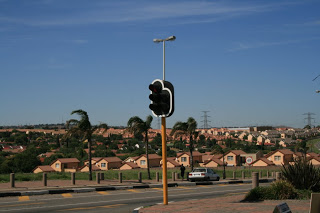
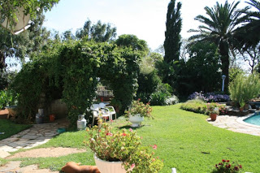
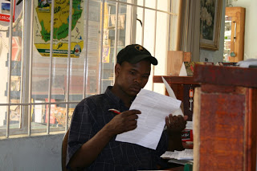

Notebook of a Return to My Native Land - part 6
Wednesday, December 13, 2006
Pinned to the Wall
Shahin wouldn't let me forget the PIN incident (or should I say incidents…), which occurred just before we left. The words piss-up and brewery come to mind. If you recall, we had struggled with our friends at Abbey to get our beloved VISA card and its PIN and, as if by magic, they managed to send everything through just as we were leaving. What I conveniently forgot to tell you was that, when I went to the ATM, I couldn't get the PIN to work. Tried it a couple of times but no luck. So we went into the branch and complained. The woman replied that quite a few customers had reported similar problems. We cursed and abused Abbey for their inability to do the most trivial tasks, requested a new PIN and thought nothing more about it.
A few days later, Shahin was desperately hunting for the new PIN she had requested for her credit card. It was missing and we just could not find it. She did find the letter where the PIN should have been, but "somebody" had removed it. And the Abbey National PIN was still in its pristine condition in the folder.
Yes, you guessed it right, I somehow confused the two PINs, used the wrong one on the Abbey card, and figured it out after requesting a new PIN. The pain, the pain. And, just to put the cherry on top, I lost my credit card's PIN too.
In my defense, I stoically state that I never claimed any organizational ability - other than perhaps with regards to source code…
But, fear not, the desenrascanco Gods were still looking over their favourite son: Maestro debit cards work fine in South-Africa and Namibia. Just look for an ABSA (in South-Africa) and a Standard Bank (in Namibia).
We'll worry about the rest later.
Jozzie
After a rather uneventful ten-hour flight, we finally landed on African soil on Thursday the 30th of December. We landed in Johannesburg - Jo'burg or Jozzie, as the locals call it - in the OR Tambo airport. The airport is on par to most European airports, if perhaps somewhat smaller than the larger ones. As with a lot of south-African infrastructure, the airport and its accesses are currently being extended in preparation for the 2010 football (soccer) World Cup. One thing we found pretty amazing about OR Tambo is that there is a Muslim prayer area, clearly indicated by the information signs.
Official entry into South-Africa is handled in an extremely efficient fashion. The visa is stamped in the passport upon entry. This is a single-entry visa, valid for 90 days. One thing to remember is to fill in the entry form on the plane, declaring all the cash being brought into the country. Note also that the form seems to imply you need to declare any goods worth more than 3000 rand. This is not the case: you should only declare items that you brought with the intention of selling. And remember, any item you declare above this limit will be subjected to a 20% VAT charge.
We were staying in Gemini Backpackers, in Crystal Gardens. They organized the airport pickup. Apparently this is a must in Jo'burg and it is not at all advised to just walk out of the airport and grab a taxi. The ride took around thirty minutes in the hot, humid, thundery weather. Unexpectedly, Jozzie is a very green city and its full of big walled houses; it is one massive low-rise sprawl, with trees and greenery everywhere. There are also lots of electric fences and barbed wired, which at first look a bit menacing until one gets used to it. On the whole, it is very pleasant to drive around: the traffic is not bad for a big city, the roads are in very good condition and the scenery is beautiful. There are quite a lot of people out and about - but not huge amounts like one sees in poorer countries (Gambia springs to mind). On the whole, the areas of Jozzie we drove through look like a fairly posh London suburb, but with the white and Asian people replaced by black people.

Interestingly enough Gemini is around the corner from the Alexandra township, which is famous for all the wrong reasons. There were enough ghetto-birds (police helicopters) flying around, at all hours of the day. The sirens of the police cars and ambulances were also constant company. However, I must say that, for us two Bethnal-Green-Massif-Innit inhabitants, this soundtrack made us feel right at home.
Gemini lodge is pleasant enough, very tidy and extremely green. There is a nice but fading snooker table, at which I spent almost all my waking hours, and a swimming pool, but the water of the pool is not clean enough to swim (or maybe it has too much chlorine). This is a common theme in most backpacker's lodges we've been to. They all have swimming pools (with filters running and everything) but the water never seems clean enough for swimming. I don't quite understand why they bother to have the pool at all.

There are some significant differences between the African backpacker and its Asian/Australian counterpart. First, there are lots of older people, some in their fifties, some older. Sleeping in dorms and all. Second, the younger crowd is not quite your lets-get-drunk-on-the-plane, fiesta-all-night-long sort of people. They are very quiet and often reserved, go to bed at ten'ish, wake up early and spend days in silence reading books. Our living room reminded me of a library. Incredibly enough, this holds true even for the English we met.
Deep Sleep in the Burg
But lets not get ahead of ourselves. Not to let our fans down, the sleeping-monsters-couple did just that: we slept. We got to the lodge at midday and we slept all day, and then all night, and then most of the morning of the next day. We were exhausted.
We decided to use the four days in Jozzie to recover from the onslaught of the previous days. Besides, not much can be done other than going on organized trips (such as the Soweto tour). Everyone keeps on telling you not to go out walking but to take the "shuttle" instead. The "shuttle" is actually just a normal car driven on demand by one of the guys from the lodge, so it would be better named "the taxi", but there you go.
So, in four days, all we did was chat to people, go to the local supermarket and mall and read books. On the subject of malls and shops, I advise the men out there not to allow their women into Mr. Price as it is an evil shop - days can be spent waiting for them to come out… Mind you, Shahin was really good, didn't buy anything and didn't take too long (and this was not written under duress! ouch!).
We also watched the movie Beat the Drum, which is good but not brilliant. In parts it is a bit like government propaganda against the AIDS epidemic. On the whole its worth watching, in particular for those less familiar with the African way of life such as ourselves. There are many scenes from rural life which are quite candid and the photography is great. The storyline is just a tad too optimistic, everything turns out too all right for our liking - certainly not at the same level of Tsotsi. But actually, surrounded by so much talk of danger and violence, it was good to watch a feel-good movie about the townships.
One thing we liked about hour five-hour stretch on the mall (half-a-day outing…) was how normal and integrated it seemed. There were lots of black people shopping, quite a few Asians, a few white people too. It seemed as if the ever illusive black middle-class is indeed forming in South-Africa.
The Quiet American
One of the lads in Gemini was American. A good American (democrat), quiet and not overly patriotic. He had just finished a teaching stretch in Namibia, and was on his way to India. We had some great chats about development but the one thing I remember best was his joke:
Two UN members, an African and a Chinese meet at a conference. After merrily chatting, the Chinese invites the African back to his country. When the African visits, he's shown to an incredible mansion. The African asks: "How do you manage to afford this on our pauper UN wages?" to which the Chinese replies: "I'll let you in on a secret. See that new bridge there? Ten percent of that went straight into my pocket!". The African nods, amazed. Later on it is the Chinese's turn to visit the African. When they get there, the Chinese is even more surprised with the African's house! Its much bigger and much posher! He asks, "how do you manage to have such a house?!". The African takes him to the window and points "Do you see that massive bridge over there?". The Chinese replies: "What bridge?". "Exactly", replies the African. "100% of the money went straight into my pocket!"
This was funny. I pointed out that the same exact joke could be made by replacing "African" with "American in Iraq" and "Chinese" with "Indian". I liked the quiet American.
The Spider Incident
One of the downsides of being surrounded by greenery is the amount of African wild-life you're exposed to. For some reason, normal insects just seem a lot more menacing in Africa. They're just bigger and meaner. One day we got back to our room and I noticed a spider. It was big, perhaps about twice the size of an English house spider, but, much like it, it seemed pretty harmless and was quietly relaxing on the wall. I dutyfuly pointed it out to Shahin.
Its pretty difficult to describe her reaction in words - I just wish I had a camera. She reacted as if a hungry pack of lions was in our room. First she was petrified, babbling something which I could not quite understand; then she started shouting at me. Then I had to open the door for her to run (and I mean RUN) outside. The funny thing was, by the time I came back to the room to catch the spider it was gone! I double-checked with the owner, who said the "big ones" are actually harmless. However, he didn't fill me with confidence by talking about the "little ones". These, apparently, are deadly. "But don't worry, if you get bitten by those ones you'll die pretty quickly".
Eventually I got back to the room, found the spider and removed it. We didn't sleep very comfortably though, thinking about the "little ones".
Bafana Bafana
A quick word on football. South-Africans are actually less enthusiastic about the World Cup than I thought they would be. I asked a couple of locals, and they seemed a bit worried about it. First, they think their national side, the Bafana Bafana, are not in their best form. Some players such as Benny Mcarthy are seen as spoiled brats that can't work hard for the team. Its amazing to think that Angola has a small budget, very few players in European leagues (and of those, most play in lower Portuguese divisions), almost no sporting facilities and still manages to qualify to the World Cup and had almost all of the supporters behind the team; whereas South-Africa has got the best facilities, massive budget, most players play in Europe and they still can't get their act together.
The second thing people seem really concerned about is security. They think the government will have to do a huge effort to step up security in order to host the event. Some people doubt the government is up to the task.
Finally, there is the huge expenditure associated with it, which some think would be better used elsewhere.
On the whole, the reactions where quite surprising. I was expecting everyone to be really positive about the first ever World Cup on African soil.
Aaron
After a few days of peace and quiet, it was time to make a move. We ended up not doing the Soweto trip this time round - it will have to be done later on. One thing that is very annoying about Jo'burg, and in fact spoils the town, is the constant need for supervision. You just can't do anything that isn't organized, with a drop-off and pick-up by a known good taxi driver. After a while you get this feeling of being fenced in, and it is quite oppressive. On hindsight, we could have probably ventured out during the day without too much trouble - one of the guys, a Venezuelan backpacker, did go to New Town and said he thoroughly enjoyed it. But these were our first few days in Southern Africa; and since we were surrounded mainly by foreigners and cautious lodge staff, we just didn't know where the limits were. It seemed safer to err in the side of caution.

Organizing the departure was interesting in itself. Gemini has this one-man-band approach and all administrative tasks are done by one chap, Aaron, who is a bit like a general manager of the place. Aaron literally deals with pretty much everything, from booking people, to collecting payments, to sorting out spiders in your room. We've seen him at his desk from the first light of day till late at night. And doing a bit of cleaning on the side too, on his spare moments. In fact, as far as we could ascertain the only thing he doesn't do is driving the shuttles, for which there are two or three drivers - who seem to sit outside all day waiting for passengers. The actual owners of the lodge, a nice white family, also seem to sit around relaxing pretty much all the time. Unfortunately, because there are quite a few people coming in and out, Aaron is always running from one place to the next and its almost impossible to get his undivided attention. And since we can't actually go anywhere without a car (which has to be organized by Aaron for you), we couldn't do much without him either. To get an idea, it could take an hour or two to get a Fanta and it took us more than a day to buy a phonecard. While we were waiting for the card, we got Aaron to ring the bus people for us. They told us that it would be pretty difficult to get to Cape Town by bus at that time. The holidays were just beginning and everyone was heading down that way. Unfortunately this meant it would also be pretty difficult to get to Windhoek by bus too as the buses have part of the route in common, up til Uppington. In the end we got Aaron to ring ComAir, and they got us a flight to Windhoek pretty much straight away. This was a win as the flight is only a couple of hours instead of the 26 hour bus journey. Although the buses are slightly less expensive, once you factor in the extra days we would have to wait round plus the time, flying is a much better deal.
So we got the plane and went off to Windhoek.